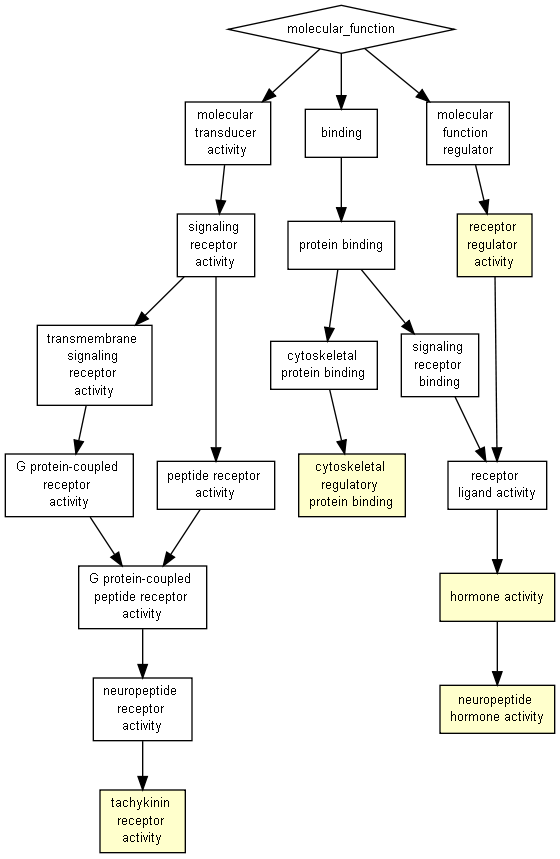

P-value color scale
| > 10-3 |
10-3 to 10-5 |
10-5 to 10-7 |
10-7 to 10-9 |
< 10-9 |

| GO term |
Description |
P-value |
FDR q-value |
Enrichment (N, B, n, b) |
Genes |
| GO:0005184 |
neuropeptide hormone activity |
9.91E-5 |
4.46E-1 |
16.18 (16689,25,165,4) |
[+] Show genes
Nts - neurotensin
Vgf - vgf nerve growth factor inducible
Grp - gastrin releasing peptide
Cartpt - cart prepropeptide
|
| GO:0005179 |
hormone activity |
1.96E-4 |
4.4E-1 |
7.14 (16689,85,165,6) |
[+] Show genes
Nts - neurotensin
Vgf - vgf nerve growth factor inducible
Sst - somatostatin
Calca - calcitonin/calcitonin-related polypeptide, alpha
Grp - gastrin releasing peptide
Cartpt - cart prepropeptide
|
| GO:0004995 |
tachykinin receptor activity |
2.9E-4 |
4.34E-1 |
67.43 (16689,3,165,2) |
[+] Show genes
Tacr3 - tachykinin receptor 3
Tacr1 - tachykinin receptor 1
|
| GO:0005519 |
cytoskeletal regulatory protein binding |
5.75E-4 |
6.47E-1 |
50.57 (16689,4,165,2) |
[+] Show genes
Map2 - microtubule-associated protein 2
Map1b - microtubule-associated protein 1b
|
| GO:0030545 |
receptor regulator activity |
6.38E-4 |
5.74E-1 |
3.03 (16689,400,165,12) |
[+] Show genes
Tac1 - tachykinin 1
Scg2 - secretogranin ii
Lypd6b - ly6/plaur domain containing 6b
Cx3cl1 - chemokine (c-x3-c motif) ligand 1
Nts - neurotensin
Fam19a2 - family with sequence similarity 19, member a2
Vgf - vgf nerve growth factor inducible
Sst - somatostatin
Ly6h - lymphocyte antigen 6 complex, locus h
Calca - calcitonin/calcitonin-related polypeptide, alpha
Grp - gastrin releasing peptide
Cartpt - cart prepropeptide
|
Species used: Mus musculus
The system has recognized 18117 genes out of 21130 gene terms entered by the user.
18117 genes were recognized by gene symbol and 0 genes by other gene IDs .
190 duplicate genes were removed (keeping the highest ranking instance of each gene) leaving a total of 17927 genes.
Only 16689 of these genes are associated with a GO term.
Output in Microsoft Excel format
The GOrilla database is periodically updated using the GO database and other sources.
The GOrilla database was last updated on Mar 6, 2021
This results page will be available on this site for one month from now (until
Jan 16, 2023
). You can bookmark this page and come back to it later.
'P-value' is the enrichment p-value computed according to the mHG or HG model. This p-value is not corrected for multiple testing of 4496 GO terms.
'FDR q-value' is the correction of the above p-value for multiple testing using the Benjamini and Hochberg (1995) method.
Namely, for the ith term (ranked according to p-value) the FDR q-value is (p-value * number of GO terms) / i.
Enrichment (N, B, n, b) is defined as follows:
N - is the total number of genes
B - is the total number of genes associated with a specific GO term
n - is the number of genes in the top of the user's input list or in the target set when appropriate
b - is the number of genes in the intersection
Enrichment = (b/n) / (B/N)
Genes: For each GO term you can see the list of associated genes that appear in the optimal top of the list.
Each gene name is specified by gene symbol followed by a short description of the gene
Back to the GOrilla main page